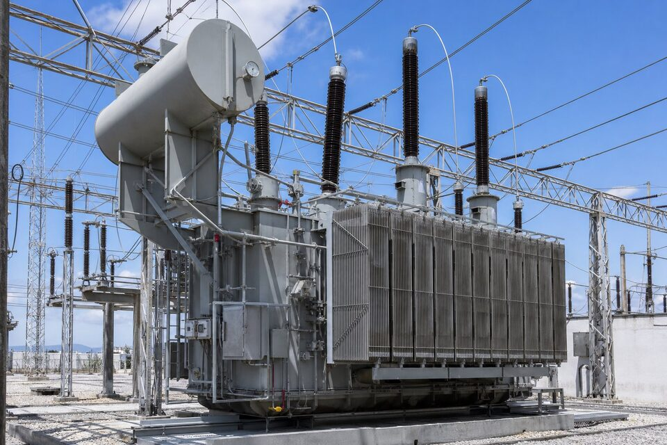

جایگاه ترانسفورماتور قدرت در شبکه
ترانسفورماتورهای قدرت در نقاط کلیدی شبکه انتقال و فوق توزیع قرار دارند: در پستهای انتقال برای تبدیل سطوح ولتاژ بالا، در نیروگاهها برای اتصال ژنراتور به شبکه و در ورودی واحدهای صنعتی بزرگ برای تغذیه کل سایت. این ترانسها در توانهای دهها تا صدها مگاواتآمپر و سطوح ولتاژ تا صدها کیلوولت ساخته میشوند و به همین دلیل، هم از نظر فنی و هم اقتصادی در رده تجهیزات استراتژیک قرار میگیرند. خرابی یک ترانس قدرت اصلی میتواند ماهها طول بکشد تا جایگزین شود؛ به همین دلیل طراحی، ساخت، آزمون و نگهداری آنها با سختگیرانهترین الزامات انجام میشود. برای خریدار، درک این جایگاه یعنی یک نکته ساده: در خرید ترانس قدرت، کیفیت و پشتیبانی سازنده مهمتر از اختلاف قیمت پیشنهادهاست.

روشهای خنککاری
تلفات ترانس به صورت حرارت در هسته و سیمپیچها ظاهر میشود و باید به صورت مداوم دفع گردد. در روشهای رایج، روغن عایق نقش انتقال حرارت را بر عهده دارد و با گردش طبیعی یا اجباری، حرارت را به رادیاتورها میرساند؛ در آنجا نیز هوا به صورت طبیعی یا با فنها خنککاری را کامل میکند. نامگذاری روشها با حروف اختصاری انجام میشود: گردش طبیعی روغن و هوای طبیعی برای توانهای کمتر، فنهای اجباری برای ظرفیتهای بالاتر و پمپهای روغن برای ترانسهای بزرگ. انتخاب روش خنککاری با توان نامی، دمای محیط و اضافه بارهای مورد انتظار انجام میشود و معمولا یک ترانس چند سطح ظرفیت متناسب با حالتهای مختلف خنککاری دارد. در مناطق گرم، ظرفیت واقعی ترانس نسبت به نامی کاهش مییابد و باید در انتخاب لحاظ شود.
تپچنجر و متعلقات کلیدی
- تپچنجر زیر بار: تنظیم نسبت تبدیل بدون قطع، با مکانیزم پیچیده و نیازمند نگهداری.
- بوشینگها: عایقهای عبور هادی از تانک در سطوح ولتاژ مختلف.
- تانک انبساط و رطوبتگیر: جبران تغییر حجم روغن و حفاظت در برابر رطوبت.
- رله بوخهلتس و حفاظتها: تشخیص خطاهای داخلی و فشار ناگهانی.
- خنککنندهها: رادیاتورها، فنها و پمپها با سیستم کنترل دما.
تپچنجر زیر بار یکی از پرتحرکترین اجزای ترانس است و آمار خرابی قابل توجهی دارد؛ به همین دلیل بازرسی و نگهداری آن برنامه خاص خود را دارد و در خرید، کیفیت سازنده تپچنجر اهمیت ویژهای پیدا میکند. رله بوخهلتس نیز در ترانسهای با تانک انبساط نصب میشود و با تشخیص تجمع گاز ناشی از خطاهای داخلی، هشدار زودهنگام میدهد. این متعلقات کوچک در مقایسه با بدنه ترانس، نقشی نامتناسب با اندازه خود در قابلیت اطمینان دارند و باید در ارزیابی پیشنهادها دیده شوند.
آزمونها و تحویل
ترانس قدرت قبل از تحویل، مجموعهای از آزمونهای روتین و نوعی را پشت سر میگذارد: آزمونهای نسبت تبدیل و گروه برداری، اندازهگیری تلفات و امپدانس، آزمون عایقی با ولتاژ القایی و اعمال ضربه، و آزمونهای حرارتی. بسیاری از این آزمونها در حضور نماینده خریدار یا بازرس شخص ثالث انجام میشود و نتایج در گزارش رسمی ثبت میگردد. یکی از آزمونهای مهم، آزمون ضربه صاعقه است که رفتار عایقی ترانس را در برابر اضافه ولتاژهای گذرا میسنجد. برای خریدار، حضور در آزمونهای کارخانهای یک حق و یک ضرورت است؛ چون پس از حمل و نصب، بسیاری از عیوب ساخت دیگر قابل تشخیص آسان نیستند. مدارک آزمون نیز باید در پرونده تحویلی بایگانی و مبنای مقایسه در آزمونهای دورهای آینده باشد.
حمل، نصب و راهاندازی
حمل ترانس قدرت به دلیل وزن و ابعاد، خود یک پروژه مستقل است: بررسی مسیر، مجوزهای تردد، انتخاب تریلر مناسب و در مواردی تخلیه روغن و جداسازی رادیاتورها و بوشینگها برای کاهش ابعاد. در نصب، فونداسیون با تحمل وزن و مهار لرزه، سیستم جمعآوری روغن و فواصل ایمنی باید مطابق طراحی باشند. پس از نصب، فرایند روغنکاری، خلأزدایی و خشککردن عایقی انجام میشود که برای ترانسهای بزرگ روزها زمان میبرد و عجله در آن میتواند رطوبت را در عایق باقی بگذارد. آزمونهای پس از نصب قبل از برقدار کردن نیز الزامیاند. هماهنگی این مراحل از زمان سفارش با سازنده، کلید راهاندازی موفق است.
نکات استعلام خرید
در استعلام، توان نامی و سطوح ولتاژ، گروه برداری، امپدانس، روش خنککاری، نوع تپچنجر و محدوده تنظیم، شرایط محیطی و الزامات استاندارد پروژه را ذکر کنید. مدارک موردنیاز مانند گزارش آزمونها، نقشههای ابعادی و وزن برای طراحی حمل و فونداسیون را نیز بخواهید. زمان ساخت ترانسهای قدرت معمولا چند ماه است و ظرفیت سازندگان معتبر باید زود رزرو شود؛ در پروژههای زمانبندیشده، سفارش ترانس یکی از اولین اقدامات خرید است. ارزیابی سازنده نیز باید شامل سوابق مشابه، توان آزمونگاه و خدمات پس از فروش شامل تامین قطعات و روغن باشد.
جمعبندی
ترانسفورماتور قدرت یک دارایی استراتژیک با عمر چند دهه است که انتخاب آن باید بر اساس کیفیت ساخت، آزمونهای کامل و برنامه لجستیک دقیق انجام شود. با حضور در آزمونهای کارخانهای، برنامهریزی حمل و نصب حرفهای و نگهداری منظم، این تجهیز دههها سرویس قابل اتکا در قلب شبکه برق ارائه میدهد.
سوالات رایج
ترانسفورماتور قدرت چه تفاوتی با ترانس توزیع دارد؟
در توانهای بالاتر و سطوح ولتاژ شبکه انتقال و فوق توزیع کار میکند، مجهز به سیستمهای پیشرفته خنککاری و تنظیم ولتاژ زیر بار است و زمان ساخت و هزینه بسیار بالاتری دارد.
روشهای رایج خنککاری کداماند؟
ترکیبهای خنککاری طبیعی و اجباری روغن و هوا مانند (ONAN)/(ONAF) و (OFAF)؛ انتخاب روش با توان ترانس و دمای محیط تعیین میشود.
تپچنجر زیر بار چیست؟
مکانیزمی که امکان تغییر نسبت تبدیل و تنظیم ولتاژ خروجی را بدون قطع بار فراهم میکند؛ یکی از پیچیدهترین و پرتحرکترین اجزای ترانس قدرت.
چرا حمل ترانس قدرت چالشبرانگیز است؟
وزن بسیار بالا و ابعاد بزرگ، نیازمند مسیرهای حمل خاص، مجوزها و گاهی تخلیه روغن و جداسازی قطعات است؛ برنامه حمل باید از مرحله ساخت هماهنگ شود.
مطالب مرتبط
با ارائه مشخصات پست و مطالعات شبکه، ترانسفورماتور قدرت از سازندگان معتبر عرضه میشود.
مشاهده صفحه محصول ← ثبت RFQ همین محصولتامین این تجهیزات را به پیشرو تجهیز فرتاک بسپارید
شرکت پیشرو تجهیز فرتاک تامینکننده تخصصی تجهیزات صنعتی برای پروژههای نفت، گاز، پتروشیمی، فولاد و نیروگاهی است. برای دریافت پیشنهاد فنی و قیمت، استعلام (RFQ) خود را ثبت کنید تا کارشناسان مهندسی فروش در کوتاهترین زمان پاسخ دهند.
- تامین برق صنعتیتجهیزات تابلو و حفاظتی
- تامین تجهیزات صنایع نفت و گازپکیج مواد مطابق وندورلیست